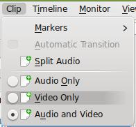
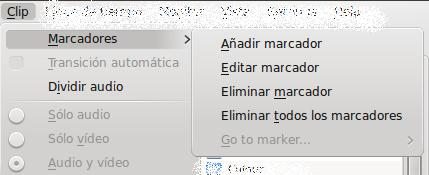
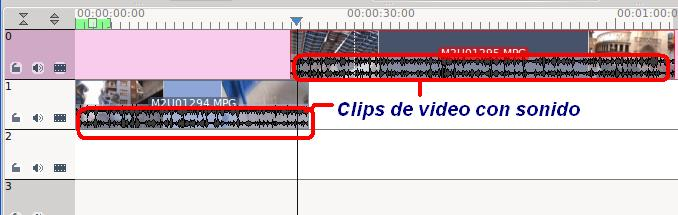
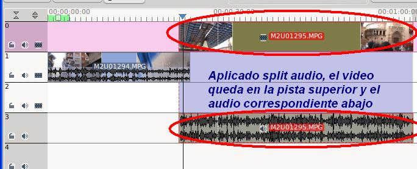
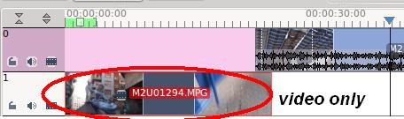

Edición de Audio y video
E. Clip
Es menú permite controlar aspectos relacionados con el clip activo
(seleccionado). Podemos ponerle marcadores en la línea de tiempo que
nos resultará útil para nuestros desplazamientos, realizar una
transición entre partes de un clip (ejemplo: dividir un clip en varias
partes), dividir el audio del mismo; elegir del clip sólo el audio o el
video o ambos (por defecto).


Split Audio: Separa el audio de la actual pista (que contiene audio y video) y deja el audio en una pista y el video en otra.
- Clip Original con video y sonido en las pistas 0 y 1.

- Aplicado el Split de Audio: Divide las pistas de video y sonido (pistas 0 y 3)

Video Only: Si seleccionamos una pista y Clip / Video only elimina el sonido de nuestra pista.

Para anular el sonido o video de una pista podemos utilizar los iconos de la línea de tiempo que se indican. En la pista cero se ha anulado el video, mientras que en la pista 1 se ha anulado el audio. Es decir, en esta composición en la línea de tiempo observaríamos el clip de la pista 1, mientras escuchamos el sonido de la pista 0.

Jo.R.C.A. 2004 - 2011

Edición de Audio y Video con Software Libre by José Ramón Cerdeira Alonso is licensed under a Creative Commons Reconocimiento-No comercial-Compartir bajo la misma licencia 3.0 España License